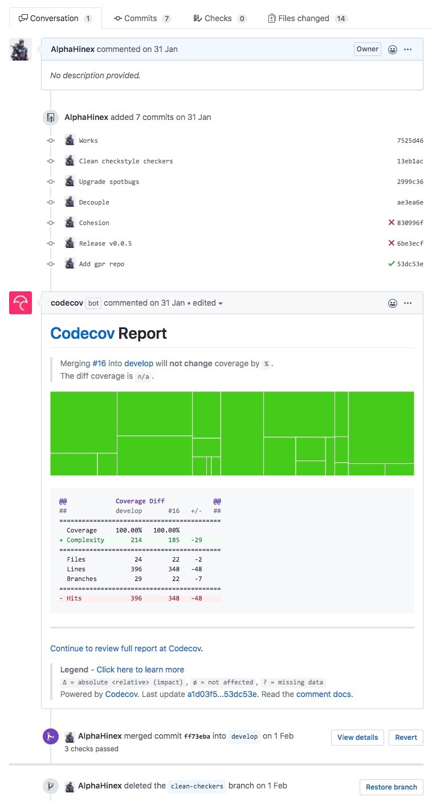
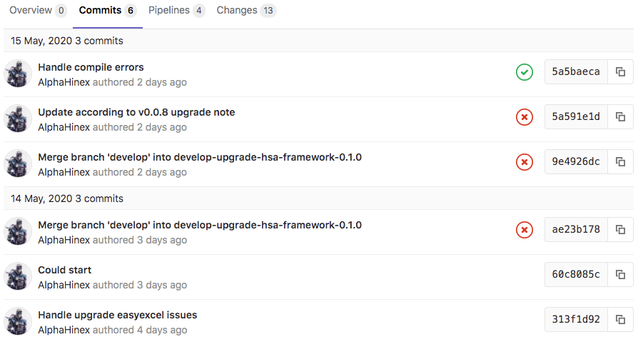
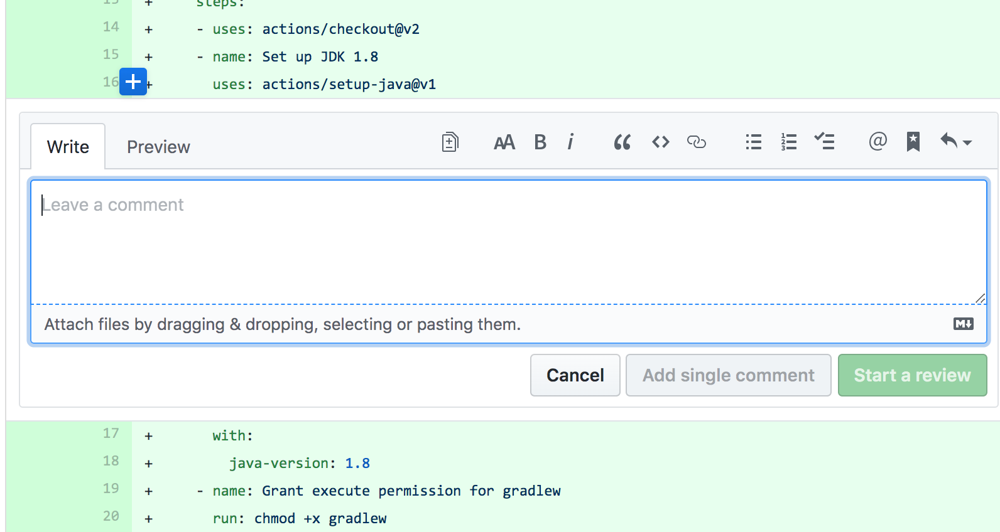
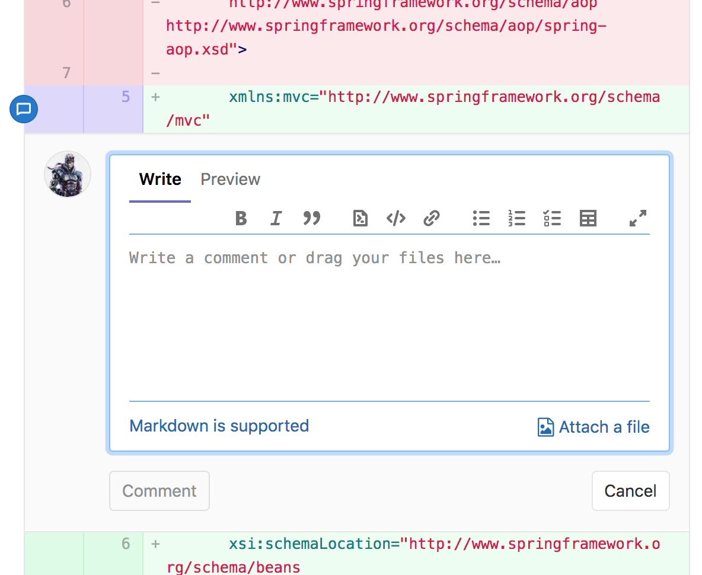
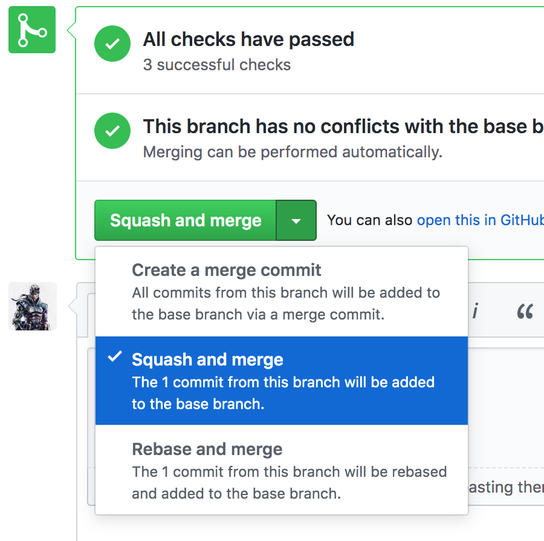
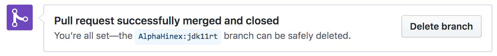

### 第一招：六脉神剑 —— 分支

分支的使用方针
- 一次只做一件事
- 用后即弃
- 为分支起一个有意义的名字
### alias
`~/.gitconfig`
```
[alias]
st = status -sb
cm = commit -m
co = checkout
cam = commit -a -m
onelog = log -p -1
oneline = log --pretty=oneline --since='2 days ago'
logs = log --all --graph --pretty=format:'%Cred%h%Creset -%C(yellow)%d%Creset %s%Cgreen(%cr) %C(bold blue)<%an>%Creset' --abbrev-commit --date=relative
fl = ls-tree -r --name-only
undo = checkout -- .
stat = diff --stat
patch = diff --name-only
stlog = log --name-status
recm = commit --amend -m
br = branch
cp = cherry-pick
```
### 分支常用操作
```bash
# 创建分支
$ git checkout -b new-branch [start point]
# 查看分支
$ git branch -a
# 切换分支
$ git checkout new-branch
# 删除分支
$ git branch -d new-branch
# 改名
$ git branch -m new-branch new-name
```
### 分支分类
* local
* remote
### remote 分支存在的意义
* 一言不合就 fork
* 保持各自仓库的独立、整洁
* 方便的获取其他人 fork 的某个分支
### remote 相关操作
```bash
# 查看 remote
$ git remote -v
# 增加 remote
$ git remote add rstoyanchev https://github.com/rstoyanchev/spring-framework.git
# 改名
$ git remote rename rstoyanchev rossen
# fetch remote 中的某个分支
$ git fetch rossen 24051
# 基于 remote 中的分支创建本地分支
$ git checkout -b 24051 rossen/24051
```
### remote 相关操作
```bash
# 解除与 remote 的关联
$ git branch --unset-upstream
# 与 remote 关联
$ git branch --set-upstream-to=origin/master
# 将本地分支，推送至远程不同名分支
$ git push -u origin 24051:2046
# 删除 remote 分支
$ git branch -rd origin/2046
# 删除远程分支
$ git push origin --delete 2046
# 删除 remote
$ git remote remove rossen
```
### stash
```bash
# 查看暂存列表
$ git stash list
# 暂存
$ git stash
# 应用最近一次暂存内容
$ git stash apply
# 应用某次暂存内容
$ git stash apply 2
# 清理所有暂存
$ git stash clear
```
### 第二招：左右互搏 —— 冲突处理

### merge
```bash
# 合并某分支至当前分支
$ git merge a
# 终止合并状态
$ git merge --abort
```
### 冲突处理
```bash
# 查看分支状态
$ git status
# 查看冲突内容
$ git diff
diff --cc README.md
index 0c6116374a,7b4933a1f1..0000000000
--- a/README.md
+++ b/README.md
@@@ -2,8 -2,8 +2,13 @@@
++<<<<<<< HEAD
+aaddda
+bbbbbb
++=======
+ acaca
+ aaaaaa
++>>>>>>> a
```
### 冲突处理 —— VS Code


### 冲突处理 —— IDEA

### 冲突处理 —— IDEA


### 如何尽可能的减少冲突？
1. 一次只做一件事
1. 每件事一个分支
1. 每个新分支都基于最新的代码创建
1. 分支用后即弃，不要重复使用
1. 培养良好的编码习惯
> 大忌：把自己代码备份一份，更新最新代码，用自己的备份去覆盖
### cherry-pick
```bash
# 选择 commit 应用至当前分支
$ git cherry-pick eb44f34d50 536e9c94e0
# 终止 cherry-pick
$ git cherry-pick --abort
```
### patch
```bash
# 生成 patch
$ git diff > demo.patch
# 应用 patch
$ git apply demo.patch
```
[Git的Patch功能](https://www.cnblogs.com/y041039/articles/2411600.html)
### 第三招：见龙在田 —— 可视化

### logs
```
logs = log --all --graph --pretty=format:'%Cred%h%Creset -%C(yellow)%d%Creset %s%Cgreen(%cr) %C(bold blue)<%an>%Creset' --abbrev-commit --date=relative
```

### gitk

### [Gitkraken](https://www.gitkraken.com/git-client)

Pull/Merge Request


Pull/Merge Request


Pull/Merge Request


### Pull/Merge Request
* 合并 commit，清理分支